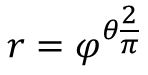
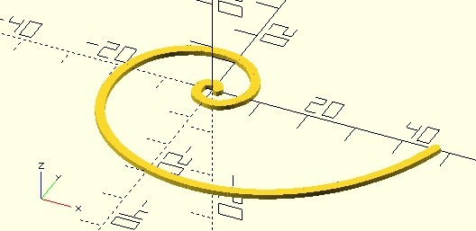
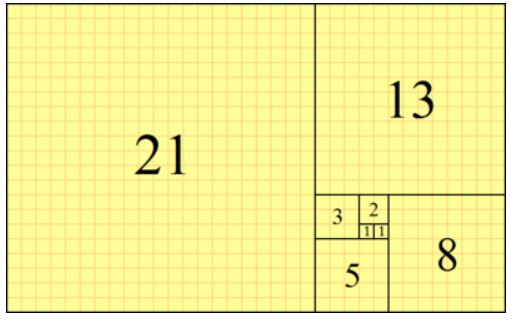
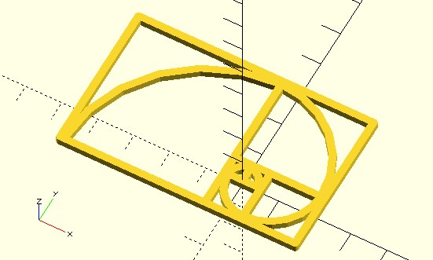
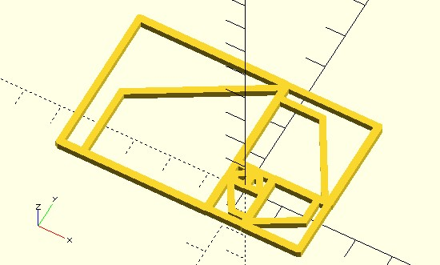
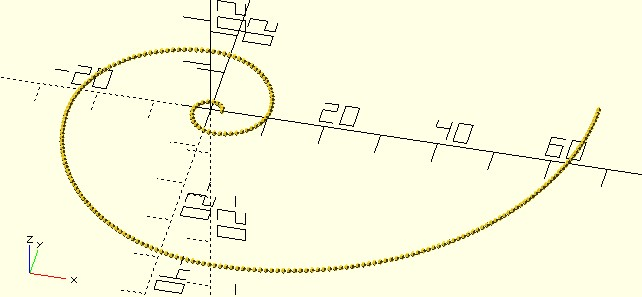
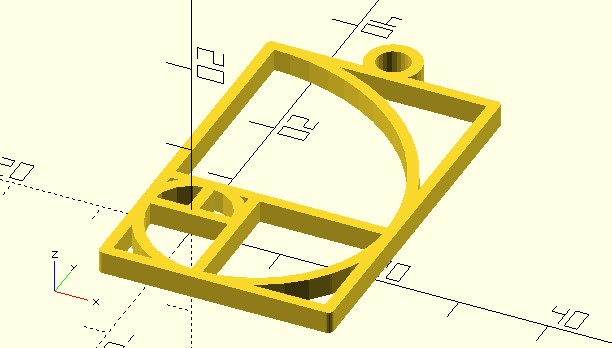

黃金螺線
March 7, 2022如果你想玩玩線條之美，黃金螺線應該是個不錯的入門選擇，若以極座標 (r, θ) 表示的話，黃金螺線的公式是：

使用公式繪製
其中 φ 是黃金比例 (1 + sqrt(5)) / 2，θ 是徑度，有了公式，可以很快地畫出黃金螺線：
use <polyline_join.scad>
use <util/radians.scad>
phi = (1 + sqrt(5)) / 2;
degrees = 720;
points = [
for(d = [0:degrees])
let(
theta = radians(d),
r = pow(phi, theta * 2 / PI)
)
r * [cos(d), sin(d)]
];
polyline_join(points)
circle(1);
這會建立以下的圖形：

費氏數列
黃金螺線另一個常為人所知的事實是跟黃金矩形有關，而黃金矩形又跟費氏數列有關，在維基百科的〈費氏數列〉條目中，有個黃金矩形圖片，其由數個正方形組成，而正方形的邊長關係，就符合費氏數列：

黃金螺線可以將黃金矩形中每個正方形的兩個對角，使用一個弧連接起來，弧的半徑就是費氏數。例如：
use <polyline_join.scad>
use <arc.scad>
use <shape_square.scad>
use <util/fibseq.scad>
module golden_rectangle(from, to, base_width, line_width) {
if(from <= to) {
fibs = fibseq(from, from + 1);
r = base_width * fibs[0];
// 90 度弧線
arc(radius = r,
angle = 90,
width = line_width,
width_mode = "LINE_INWARD"
);
// 正方形
sq_shape = shape_square(r);
translate([r, r] / 2)
polyline_join([each sq_shape, sq_shape[0]])
circle(line_width / 2);
diff = fibs[1] - fibs[0];
translate([0, -diff * base_width])
rotate(90)
golden_rectangle(from + 1, to, base_width, line_width);
}
}
$fn = 24;
from = 1;
to = 6;
base_width = 5;
line_width = 2;
linear_extrude(line_width)
golden_rectangle(from, to, base_width, line_width);
dotSCAD 的 fibseq 可以生成第 from 個到第 to 個費氏數列，畫出來的模型如下：

怎麼感覺越外圍的弧越不連續？當然，因為使用了固定的 $fn，你要說這是風格也可以，可以試著改變一下 $fn 為較小的值，這會生成有趣的模型：

結合 dotSCAD
如果不希望 r 越來越大，螺線就看來不連續，可以每次繪製弧線時適當地增加 $fn，或者是透過公式，當螺線的 r 越大時適當地縮小 θ，有興趣可以自己嘗試看看。
沒興趣嘗試的話，可以使用 dotSCAD 的 golden_spiral 函式，它會產生黃金螺線的點，以及相對應的角度：
use <golden_spiral.scad>
pts_angles = golden_spiral(
from = 3,
to = 10,
point_distance = 1
);
for(pt_angle = pts_angles) {
translate(pt_angle[0])
sphere(0.5);
}
從繪製出來的圖案可以看到，golden_spiral 函式產生的點與點間距離，大致上會與 point_distance 近似：

可藉此避免螺線的 r 越大螺線越不連續的問題，例如：
use <polyline_join.scad>
use <shape_square.scad>
use <golden_spiral.scad>
use <hollow_out.scad>
use <util/fibseq.scad>
// 黃金矩形
module golden_rectangle(from, to, base_width, line_width) {
if(from <= to) {
fibs = fibseq(from, from + 1);
r = base_width * fibs[0];
sq_shape = shape_square(r);
translate([r, r] / 2)
polyline_join([each sq_shape, sq_shape[0]])
circle(line_width / 2);
diff = fibs[1] - fibs[0];
translate([0, -diff * base_width])
rotate(90)
golden_rectangle(from + 1, to, base_width, line_width);
}
else {
// 最後畫個小環
fibs = fibseq(from - 1, from);
diff = fibs[1] - fibs[0];
r = base_width * fibs[0];
ring_r = r / 8;
offset_p = [-r / 2, -diff * base_width - (r + ring_r) + line_width * 0.5];
rotate(90)
translate(offset_p)
hollow_out(line_width)
circle(ring_r);
}
}
// 黃金螺線
module golden_spiral(from, to, base_width, line_width, point_distance) {
pts_angles = golden_spiral(
from = from,
to = to,
point_distance = point_distance
);
points = [for(pt_angle = pts_angles) pt_angle[0]] * base_width;
polyline_join(points)
circle(line_width / 2);
}
$fn = 24;
from = 1;
to = 5;
base_width = 5;
line_width = 1.25;
point_distance = .5;
linear_extrude(line_width * 2) {
golden_rectangle(from, to, base_width, yline_width);
golden_spiral(from, to, base_width, line_width, point_distance);
}
我幫這個模型加了個小環，3D 列印後還可以當吊飾：
